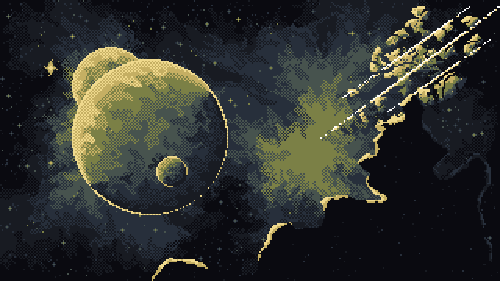
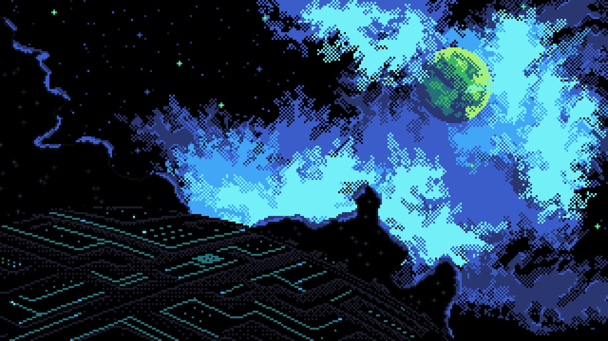
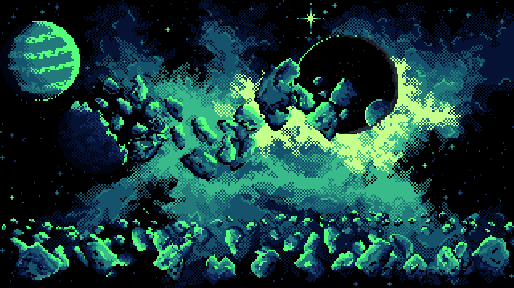
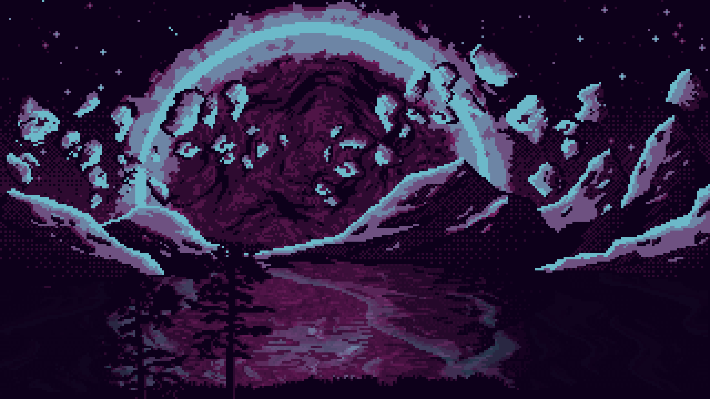

A quieter way to use your computer.
A carefully styled, keyboard-first Linux desktop. Scrolling tiles, fast search, useful shortcuts, and a setup that stays out of your way.
Everything you need, nothing to fight.
Built on Fedora with Niri's scrollable tiling. A familiar launcher, transparent controls, and shortcuts you can actually discover.
One place to search
Super + Space opens the styled Rofi launcher. Optional Vicinae remains available; Fuzzel is included as a fallback.
Keyboard help on demand
Ctrl + Super + K opens the searchable shortcut guide. Super + Shift + S opens Kuhl Settings for display, UI and bar scaling.
Desktop controls that work
Adjust display scaling, move or resize the bar, switch appearance and close windows with Super + Q or the bar button. Existing dotfiles are preserved by default. Explicit replacements are backed up, with GNOME retained as a fallback.
Four artwork-led palettes.
Inspired by KyleOS and the original works of PrisonerCoin. Kuhl Day and Dusk are still included. Artwork is licensed separately from code; see the credits.




One command. Your choices.
Run on a regular Fedora Workstation installation. Verify native Niri functionality on your hardware before depending on it. The terminal setup handles package selection, checks, configuration and the optional replacement of existing settings.
curl -fsSL https://raw.githubusercontent.com/TerabyteEXE/Kuhl-OS/main/bootstrap.sh | bashThe command uses code from the GitHub main branch. Publish the revised project first. Do not run it as root.
Before installing: This is an AI-assisted, experimental community project. Generated code can contain bugs, unsafe commands, insecure dependencies, or security weaknesses. Inspect bootstrap.sh, install.sh, and third-party repositories yourself. Research packages and licensing, verify changes, and keep tested backups. No security audit is claimed.
Built on other people's work.
Kuhl OS contains Kuhl's own code and MIT-licensed Niri, Waybar, Alacritty, Rofi and Mako configuration files copied and adapted from KyleOS by Rosenkranz (Person-008). KyleOS's original wallpapers are not MIT; four licensed artwork-based original GIFs plus static first frames are included under CC BY-NC-SA 3.0, credited to PrisonerCoin. Unlicensed Survey artwork is excluded.
- KyleOS — Rosenkranz · MIT source reference
- PrisonerCoin · original artwork
- Final Frontier · 2022
- Dyson Analysis · 2023
- Puncture · 2023
- Slow End · 2023
- CC BY-NC-SA 3.0 · artwork license
- Niri · Wayland compositor
- Fedora · Linux base
- Waybar · desktop bar
- Rofi · launcher
- Mako · notifications
Full notices, modifications, excluded artwork, other dependencies, and licensing notes are in docs/CREDITS.md and docs/SECURITY.md.